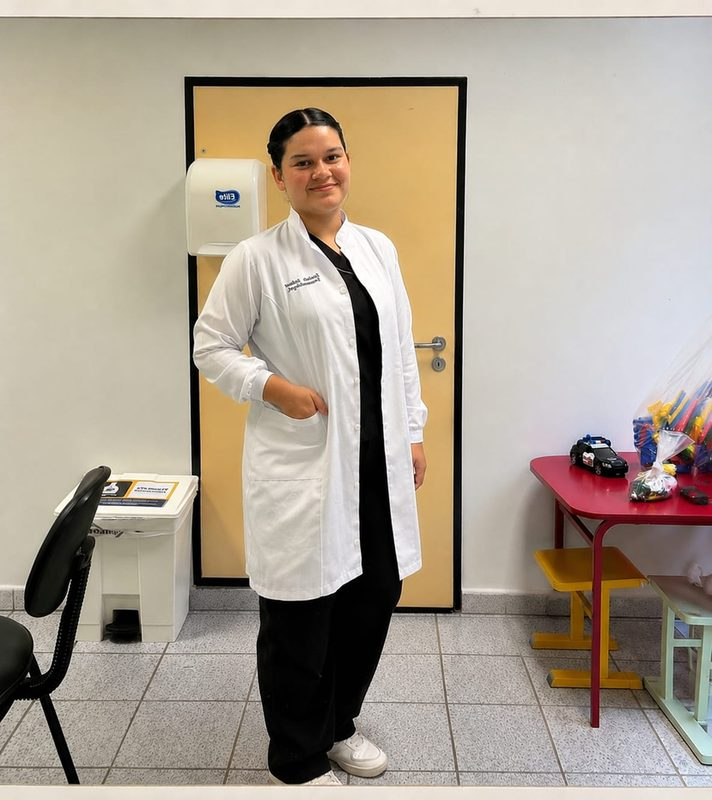
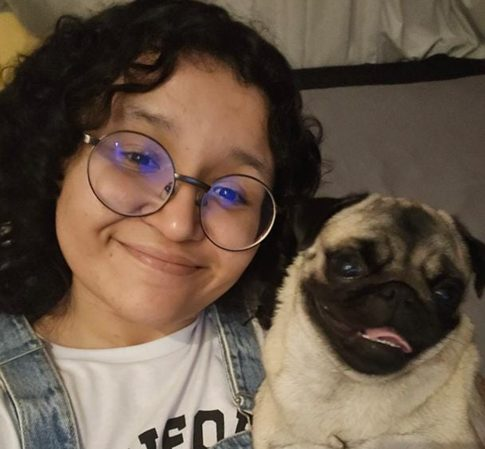
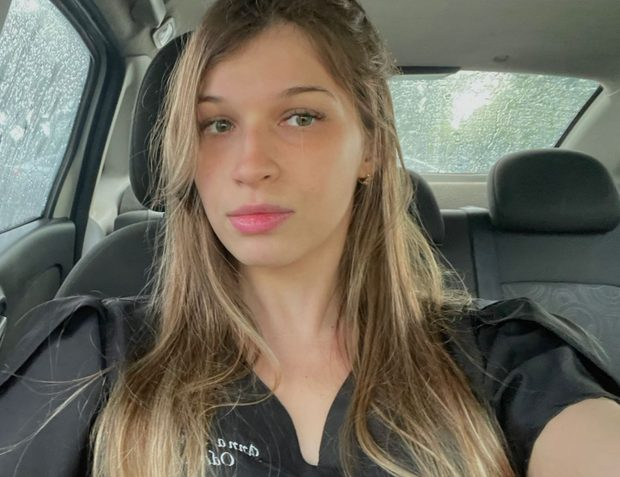

Ensino
Promovemos atividades educativas, trocas de conhecimento e momentos de aprendizagem voltados à Libras, à inclusão e à saúde da pessoa surda.
CCS · UNIFOR
Liga de Libras e Atenção à Saúde da Pessoa Surda
Promovendo inclusão, acessibilidade e conhecimento sobre Libras e a saúde da pessoa surda.




Time LILAS 2026.2
Sobre a liga
A LILAS é a Liga de Libras e Atenção à Saúde da Pessoa Surda, formada por estudantes de diferentes áreas da saúde e do conhecimento, unidos pelo propósito de promover inclusão, acessibilidade e conscientização sobre a comunidade surda.
A liga busca aproximar os estudantes das práticas inclusivas, da Libras e da realidade da pessoa surda nos serviços de saúde, fortalecendo a formação acadêmica e humana de seus integrantes.
Propósito
Promover conhecimento sobre Libras e sobre a saúde da pessoa surda, aproximando os estudantes das práticas inclusivas e da comunidade surda.
Também buscamos incentivar a sensibilização acadêmica, a acessibilidade comunicacional e a construção de um cuidado em saúde mais humano, inclusivo e preparado para atender diferentes necessidades.
Áreas de atuação
Ensino, pesquisa, extensão e organização — tudo em torno da inclusão e da Libras.
Promovemos atividades educativas, trocas de conhecimento e momentos de aprendizagem voltados à Libras, à inclusão e à saúde da pessoa surda.
Incentivamos a produção científica, o estudo acadêmico e a reflexão sobre acessibilidade, Libras e atenção à saúde da comunidade surda.
Realizamos ações que conectam universidade e comunidade, promovendo acolhimento, conscientização e práticas inclusivas.
Divulgamos conteúdos, projetos e ações da liga, fortalecendo a presença da LILAS e ampliando o alcance das pautas de acessibilidade e inclusão.
Coordenamos a estrutura interna da liga, contribuindo para o funcionamento, organização e acompanhamento das atividades.
Integrantes
Estudantes de várias áreas, unidos pela Libras, pela inclusão e pelo cuidado em saúde.
Fique por perto
Conheça nossas ações, projetos e conteúdos sobre Libras, inclusão e saúde da pessoa surda.
Siga: @lilasunifor
Acessar Instagram